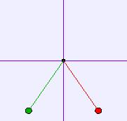

|  |
Two charges hanging from wires, repel each other. The simulation shows the motion and reports angle (from the vertical) for each charge. You can change the charge (in μC), initial position and damp the motion (set velocity equal to zero) of the charges. Users can examine the model if Ejs is installed.
The Coulomb Pendulum Model was created by Anne Cox using the Easy Java Simulations (EJS) authoring and modeling tool.
You can examine and modify a compiled EJS model if you run the program by double clicking on the model's jar file. Right-click within the running program and select "Open EJS Model" from the pop-up menu to copy the model's XML description into EJS. You must, of course, have EJS installed on your computer.
Information about EJS is available at: <http://www.um.es/fem/Ejs/> and in the OSP ComPADRE collection <http://www.compadre.org/OSP/>.